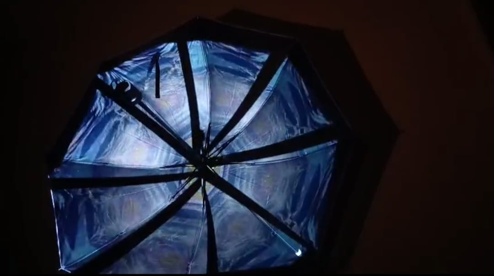

FILOSOFI
Harmoni antara hujan, cahaya, dan perlindungan.
"Terinspirasi dari hakikat sebuah payung. Tentang bagaimana tetesan hujan dan terik matahari menjadi indah saat ia jatuh tepat di atas perlindungan."
Proses Mapping